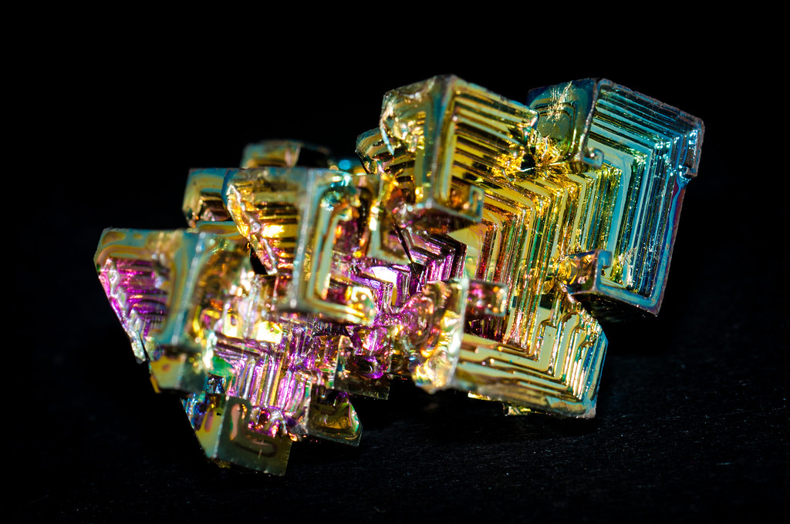
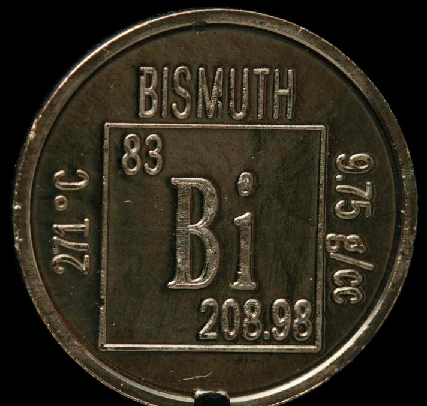

Висмут
Ви́смут — химический элемент с атомным номером 83. Принадлежит к 15-й группе периодической таблицы химических элементов (по устаревшей короткой форме периодической системы принадлежит к главной подгруппе V группы, или к группе VA), находится в шестом периоде таблицы. Атомная масса элемента 208,98040(1) а. е. м. Обозначается символом Bi (от лат. Bismuthum). Относится к постпереходным металлам. Простое вещество висмут представляет собой при нормальных условиях блестящий серебристый с розоватым оттенком металл. При атмосферном давлении существует в ромбоэдрической кристаллической модификации.

Впервые висмут описан в рукописях алхимиков 15 в., но долгое время считался разновидностью олова, свинца или сурьмы. В 16–17 вв. использовался как компонент сплавов, соли применялись в медицине и для изготовления косметических средств. Химическая индивидуальность висмута установлена в 1739 г. немецким химиком И. Г. Поттом. Этимологические исследования указывают в качестве языка происхождения немецкий – weiße Masse (белая масса).Вследствие расширения объёма при переходе висмута из расплавленного состояния в твёрдое его сплавы с другими металлами используют при изготовлении литья сложного профиля. Легкоплавкие сплавы висмута (например, сплав Вуда с tпл 68 °C, сплав Розе с tпл 94 °C) применяют при изготовлении матриц и форм для литья пластмасс, легкоплавких пробок, предохранителей и прочего в противопожарной аппаратуре. Висмут – компонент припоев, баббитов и пр. Металлический висмут используется как полупроводниковый материал для термоэлектрических генераторов, расплавленный висмут – в качестве теплоносителя в ядерных реакторах. Сплавы висмута с марганцем – для производства мощных постоянных магнитов. Висмут входит в состав высокотемпературных сверхпроводников, например Bi2Sr2CaCu2O8+δ и Bi2Sr2Ca2Cu3O10+δ. Висмут и его соединения применяют в производстве лекарственных и косметических средств, красителей.

Содержание висмута в земной коре 1,7·10–5 % по массе. Основные минералы: самородный висмут, висмутин, бисмит, бисмутит, тетрадимит, козалит.
Получение висмута основано на переработке полиметаллических медных и свинцовых концентратов и висмутовых руд методами пирометаллургии и гидрометаллургии. Для получения висмута из сульфидных соединений висмута, получаемых при попутной переработке медных концентратов, используют осадительную плавку с железным скрапом и флюсом.